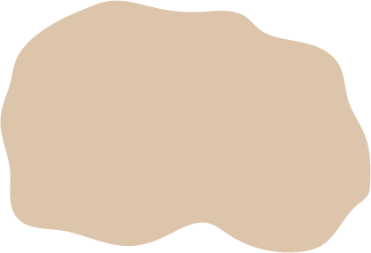

Скіфія. Розселення культурно-історичних спільнот (поч. VІІ ‒ ІІІ ст. до н. е.)
Скіфський період
Локальні варіанти скіфоїдної культури Лісостепу
| києво-черкаська | |
| східноподільська | |
| західноподільська | |
| посульська | |
| ворсклинська | |
| сіверсько-донецька |
Локальні варіанти скіфської степової культури
| придунайська | |
| придністровська | |
| приольвійська | |
|  | бузько-інгульська |
| висунсько-інгулецька | |
| ягорлицько-каланчацька | |
| нижньодніпровська |
Культури племен, що не входили до Скіфії
| Юхнівська | |
| Підгірцівсько-мілоградська | |
| Пізньовисоцька | |
| Куштановицька |
Групи памʼяток племен, що не входили до Скіфії
|  | надпорізька лівобережна |
| західнонадазовська | |
| східнонадазовська | |
| присиваська | |
| східнокримська | |
| західнокримська | |
| передгірська |
Памʼятки скіфського періоду: городища і поселення
| Городище | |
| Поселення |